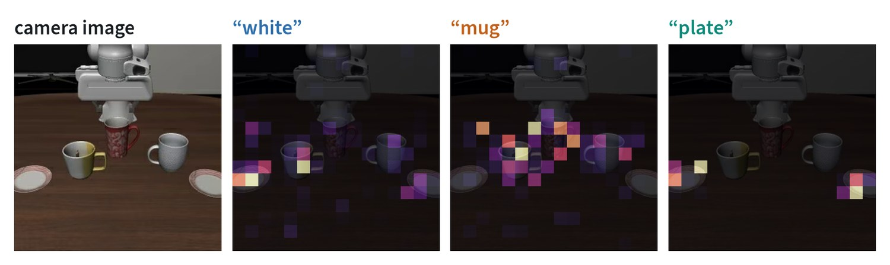
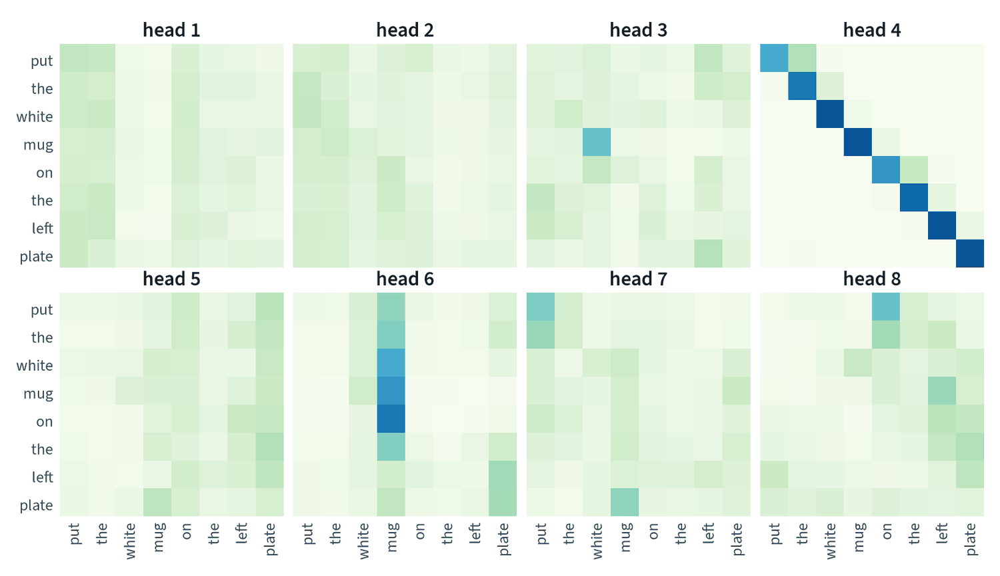
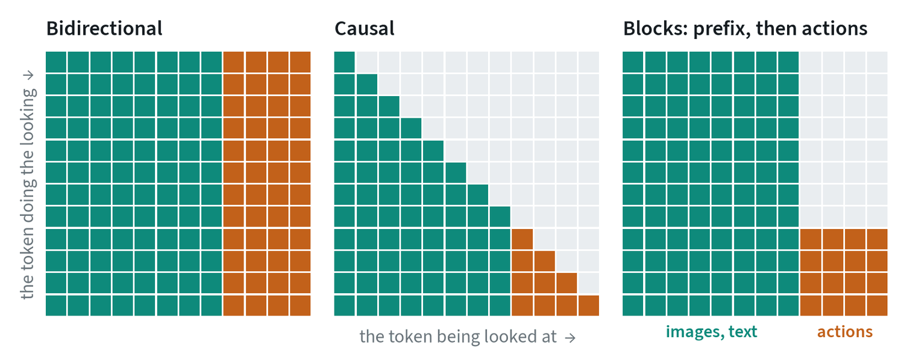
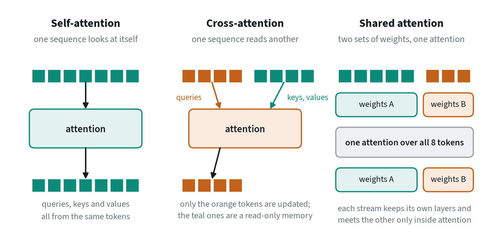
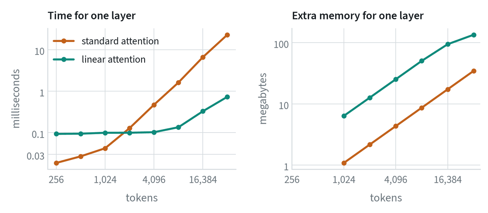
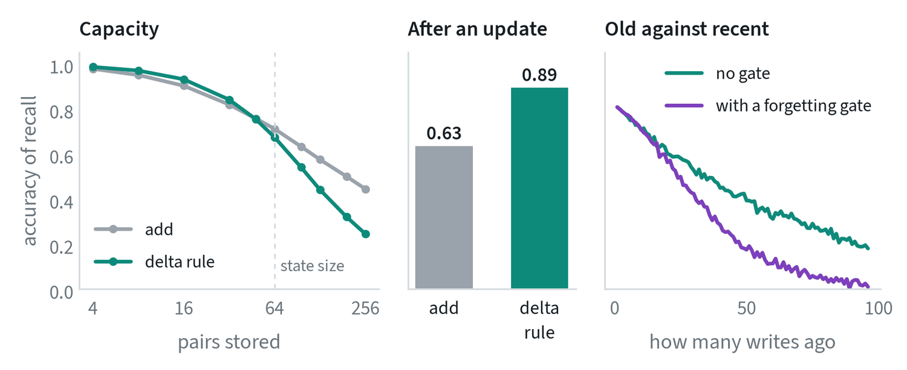

What attention computes
Attention is one operation, and everything else in this note is a variation on it. Each token asks a question, every token offers an answer, and each token leaves with a blend of the answers that matched its question best.
Attention(Q, K, V) = softmax( Q KT ÷ √d ) V
Take a sequence of n tokens, each a vector of width d. Three learned matrices turn every token into three vectors: a query (what am I looking for?), a key (what do I contain?) and a value (what do I pass on?). Stacked, these are Q, K and V.
- Q KT is an n × n table of scores: the dot product of every query with every key. A large score means a key matches a query.
- ÷ √d keeps the scores at a steady size. Dot products grow with the width, and without the division the softmax would put all its weight on one token and stop passing gradient.
- softmax turns each row of scores into positive weights that sum to one. Each row is one token deciding where to look.
- × V replaces each token with the weighted average of the values.
Two properties follow directly. Attention is a soft lookup: a dictionary where every entry answers a little, in proportion to how well its key matches. And its output is always an average of existing values, so attention can move information between tokens and cannot create any. Creating is the job of the MLP that follows it in every block, as the note on the transformer describes.
What it looks like in a real model


In this model the image is 256 tokens and the instruction follows it in the same sequence, so a word can attend to any patch. The word “plate” sends 96% of its attention to image tokens, and it lands on the two plates. “Mug” sends 91% and lands around the mugs.
Two cautions. This head was chosen because it is readable; most of the 144 heads in the model are not, and several put their weight on a few background patches that the model appears to use as scratch space. And a map shows where information was read from, not what was done with it. Attention maps are evidence about a model, not an explanation of it.
Multi-head attention
One attention operation can follow one kind of relationship at a time. So the width d is split into h equal slices, called heads, each with its own query, key and value matrices. The heads run in parallel on the same tokens, and their outputs are joined back together. Eight heads of width d ÷ 8 cost about the same as one head of width d.


The heads have plainly learned different jobs. One carries each token’s own content forward. One gathers everything toward the object of the sentence. Others spread their weight thinly, which often means they are doing their work on the image tokens, outside this crop.
A common variation changes how heads share parameters. In grouped-query attention, several query heads share one set of keys and values. Quality changes little, and the stored keys and values, which dominate memory during generation, shrink by the sharing factor.
Masks: who may look at whom


A mask is applied by adding a very large negative number to the forbidden scores before the softmax, so their weights become zero. The mask is what distinguishes the main kinds of transformer.
- Bidirectional. Every token sees every other. Used by encoders, where the whole input is available at once.
- Causal. A token sees only itself and earlier tokens. This is what lets a model be trained to predict the next token at every position in one pass, and then generate one token at a time.
- Block masks. Robot policies combine the two. The images and instruction see only each other, so their result does not depend on the actions and can be computed once and stored. The action tokens see everything. The real model above uses exactly this for its image and instruction tokens, which is why the grids in the previous figure are not triangular.
Self, cross and shared attention
The formula does not say where the queries, keys and values come from. Three arrangements are in common use.


| Self-attention | Cross-attention | Shared attention | |
|---|---|---|---|
| Queries from | The sequence itself | Sequence A | Both streams |
| Keys and values from | The sequence itself | Sequence B | Both streams |
| What is updated | Every token | Only A; B is read-only | Both, unless a mask prevents it |
| Score table | n × n | nA × nB | (nA + nB)² |
| Weights | One set | A’s layers plus a cross-attention layer | A separate set for each stream |
| Used for | Almost everything | Conditioning: an image model reading text, an action network reading a backbone’s features | A small action network running beside a large vision-language model; text and image streams in image generators |
Cross-attention is the classic way to condition one model on another. The memory side is computed once and can be cached, the cost is set by the smaller sequence, and information flows one way.
Shared attention, also called joint attention, keeps two streams of tokens with their own weights and lets them meet only inside the attention operation, where their tokens are concatenated. Each stream keeps layers suited to its own kind of data, and the streams can differ in size as long as their attention heads match. Several robot policies attach their action network this way: its tokens attend to the vision-language model’s tokens layer by layer, while a block mask stops the vision-language tokens from looking back.
The simplest alternative to both is to put everything in one sequence with one set of weights. That is what a vision-language model does with image and text tokens, and it works when the token types are similar enough to share layers.
Position
Nothing in the formula depends on where a token is. Shuffle the input and the output shuffles with it. Order therefore has to be supplied, and there are two families of method.
- Added to the token. A vector for each position, learned or computed, is added to the token before the first layer. Simple, and tied to the lengths seen in training.
- Applied inside attention. Rotary position encoding rotates each query and key by an angle proportional to its position. The dot product of two rotated vectors then depends on the difference in their positions, so the score reflects how far apart two tokens are. It extends naturally to two axes for images and three for video, and it is the common choice in current models.
What attention costs


The score table has n × n entries, so the work grows with the square of the sequence length. In the measurement, eight times as many tokens cost 49 times as long. That is the reason video and long histories are expensive, and the reason so much effort goes into reducing token counts, as the deployment note shows.
Memory is a different story, and the right-hand panel shows it. Modern implementations never store the whole table. They compute it in blocks that fit in the processor’s fast memory and discard each block once it has been used, a technique published as FlashAttention. The result is exact, the memory grows only in proportion to n, and the time still grows with the square.
- The key-value cache. When a model generates one token at a time, the keys and values of earlier tokens do not change. They are stored, and each new token computes only its own row of scores. The cache grows with the sequence, the layers and the heads, and it is the main memory cost of long generation.
- Fewer tokens. Merge neighbouring tokens, pool them, or attend only within a local window.
- A different operation. Replace the softmax with something that does not need the table at all. That is the next section.
Linear attention, and attention as a recurrence
The n × n table exists because the softmax has to see a whole row of scores before it can normalise them. Drop the softmax, measure similarity with a plain dot product of transformed queries and keys, and the order of the sums can be changed:
outputi = Σj ( qi · kj ) vj = ( Σj vj kjT ) qi = S qi
The bracket is a single d × d matrix, S, that does not depend on which token is asking. Compute it once and every token gets its answer with one matrix multiplication. The cost is proportional to n, not n².
With a causal mask, token t may only use the tokens before it, and S becomes a running sum:
St = St−1 + vt ktT outputt = St qt
This is a recurrent network. The state S has a fixed size, each new token costs the same however long the sequence, and nothing like a key-value cache grows in the background. Read the other way, S is an associative memory: writing adds the pair (key, value), and reading with a query returns the values stored under similar keys.
The price is in that fixed size. Standard attention keeps every past token and can retrieve any one of them exactly. A d × d state holds about d clean associations, and beyond that they blur into one another.
The delta rule and Gated DeltaNet
A plain running sum can only add. If the same key arrives again with a new value, both values are now stored under it and a read returns their mixture. Two refinements fix this, and they are the core of the current linear recurrent designs.
The delta rule writes the correction instead of the value. Before storing, it reads what the memory already returns for this key and removes it:
St = St−1 ( I − βt kt ktT ) + βt vt ktT
The first term erases the old content along the direction of the key, by an amount β that the network chooses per token. The second writes the new value there. Gated DeltaNet adds one more learned number per token, a gate α between 0 and 1 that scales the whole previous state:
St = St−1 ( αt ( I − βt kt ktT ) ) + βt vt ktT
With α near 1 it behaves as the delta rule and replaces one association precisely. With α near 0 it wipes the memory, which is what is wanted at a change of context. The network learns when to do which.


The experiment shows what each part buys, and it is not raw capacity. With fewer pairs than the state’s width, both rules recall well, and once the memory is overfull the delta rule is the worse of the two, because each correction disturbs its neighbours. Its advantage is in the middle panel. When stored keys are given new values, plain addition returns a blend of old and new and recalls the new value with accuracy 0.63. The delta rule replaces the old value and reaches 0.89. The right-hand panel shows the gate doing its job: recent pairs are recalled perfectly either way, and with the gate the oldest have been cleared to make room.
State-space models such as Mamba are close relatives. They too carry a fixed-size state forward with learned, input-dependent rules for what to keep.
Choosing between them
| Situation | Reach for | Why |
|---|---|---|
| Sequences up to a few thousand tokens | Standard attention | Exact retrieval of any token, and the cost is acceptable |
| One model conditioning another | Cross-attention | One-way, cacheable, cost set by the smaller side |
| A small specialist beside a large general model | Shared attention with a block mask | Each keeps its own weights; the large side can be cached |
| Generation, one token at a time | Causal attention with a key-value cache | Each new token costs one row, not a whole table |
| Very long or unbounded streams | Linear recurrent layers, often mixed with some standard attention | Constant cost per token and no growing cache |
| Long video and world models | Compression first, then a mix of the above | Token counts are the dominant cost |
The trade is always the same one. Standard attention remembers everything and pays for it in time. Recurrent forms pay a fixed price and remember a summary. Mixed stacks, with mostly recurrent layers and a few standard attention layers, try to take the cheap summary most of the time and the exact lookup where it matters.
Common mistakes
- Reading an attention map as an explanation. It shows where a head read from. Confirm any conclusion by removing the input and seeing whether the output changes.
- Forgetting the mask when caching. A cached result is valid only if those tokens could not see what came later.
- Expecting linear attention to be a free replacement. It trades exact recall for a fixed-size summary. Check the task needs only the summary.
- Counting only time. During generation the key-value cache, not the arithmetic, is often what runs out.
Terms
- Query, key, value
- The three vectors each token produces: what it seeks, what it offers to be matched on, and what it passes on.
- Head
- One of several attention operations run in parallel on slices of the token’s width.
- Mask
- A rule fixing which tokens may attend to which.
- Cross-attention
- Attention in which queries come from one sequence and keys and values from another.
- Shared attention
- Two token streams with separate weights that attend over their combined tokens.
- Key-value cache
- Stored keys and values of earlier tokens, reused while generating.
- Linear attention
- Attention without the softmax, computable in time proportional to the sequence length.
- Delta rule
- A memory update that removes what is stored under a key before writing the new value.
Further reading
- Vaswani et al., 2017. Attention Is All You Need.
- Dao et al., 2022. FlashAttention: Fast and Memory-Efficient Exact Attention with IO-Awareness.
- Su et al., 2021. RoFormer: Enhanced Transformer with Rotary Position Embedding.
- Ainslie et al., 2023. GQA: Training Generalized Multi-Query Transformer Models from Multi-Head Checkpoints.
- Katharopoulos et al., 2020. Transformers are RNNs: Fast Autoregressive Transformers with Linear Attention.
- Schlag et al., 2021. Linear Transformers Are Secretly Fast Weight Programmers.
- Yang et al., 2024. Gated Delta Networks: Improving Mamba2 with Delta Rule.
- Gu and Dao, 2023. Mamba: Linear-Time Sequence Modeling with Selective State Spaces.
- Darcet et al., 2023. Vision Transformers Need Registers.
- Black et al., 2024. π0: A Vision-Language-Action Flow Model for General Robot Control.